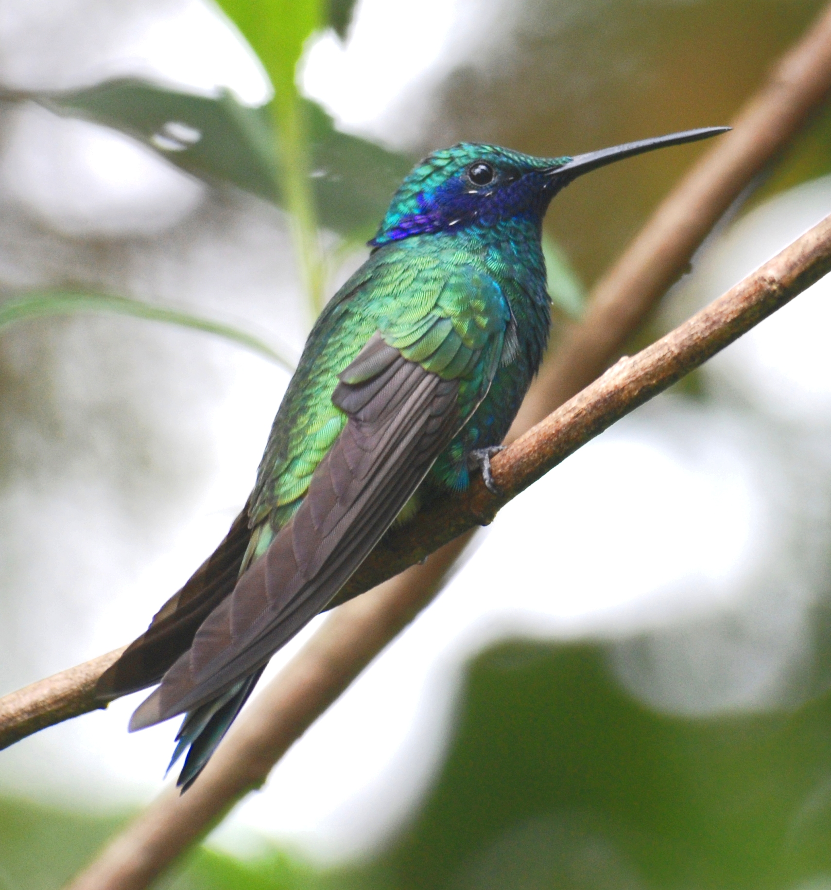
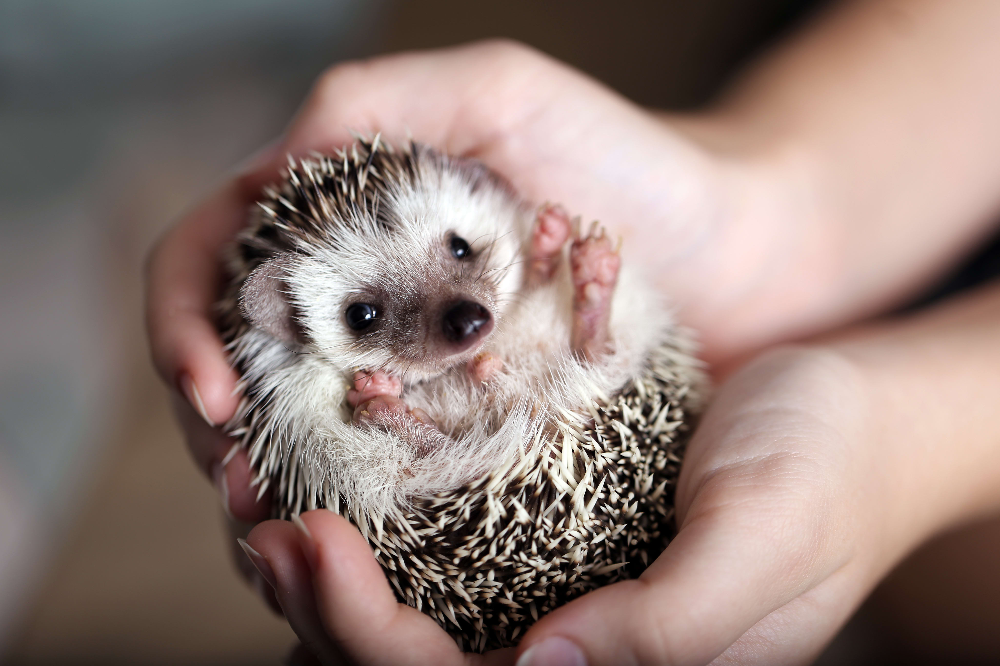
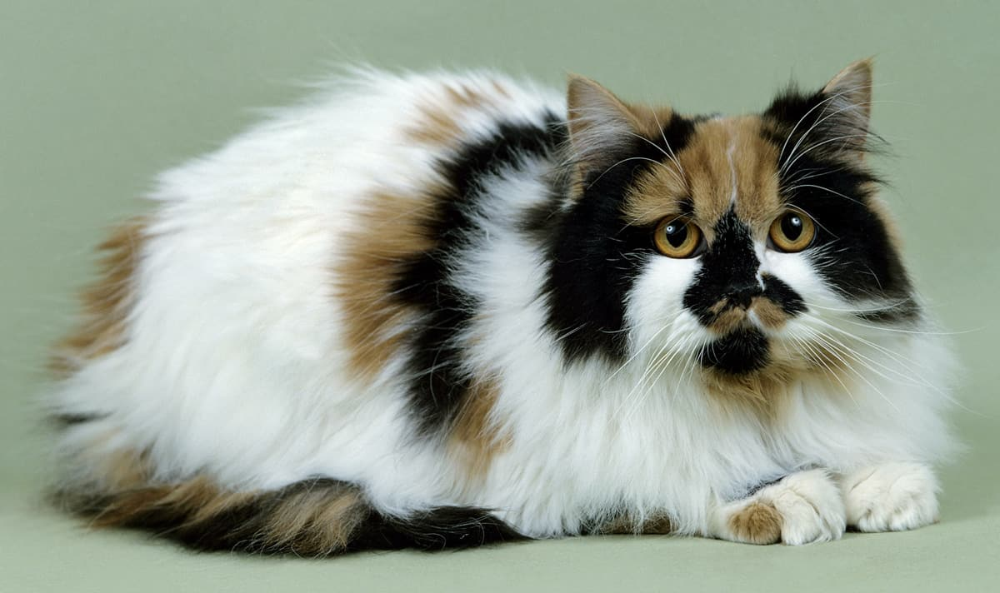
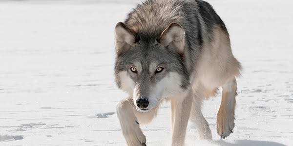

And my list of favourite animals is...
-

Sharks are fascinating creatures. Specially The Great White Shark. According to Wikipedia, a teeth can reach to 7.5 cm, and have a total of 300 teeth.
-

Hummingbirds are beautiful, small creatures, they live so fast, that according to Wikipedia they live around 5 years, and eat a lot of sweet things
-

Hedgehogs are very cute, and very small, they reach to 23 cm and weight 1 1/2 kg according to Wikipedia.
-

Cats are some of the most common pets for humans besides dogs, i had one cat like the one in this image, with his face smooshed. I miss him very much. Wherever you are Gizmo, i love you
-

My most favourite animals are wolfs, the ancestors of dogs, and look like Huskies, they seem to be loyal with each other, hunt together and even have a sense of family. And are very much more ferocious than dogs.